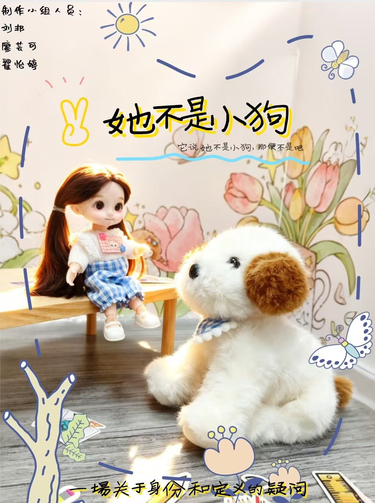
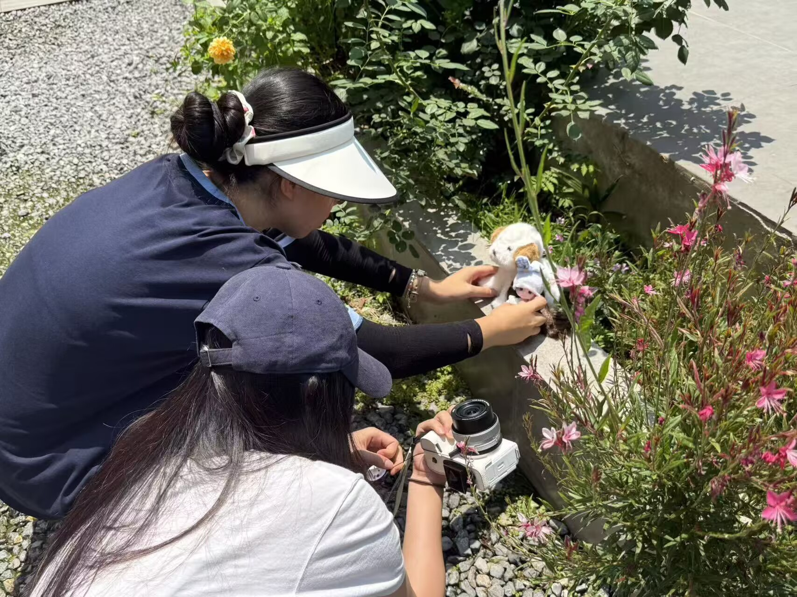

有时，是一段被树遮住的路；有时，是人群进入画面前的空白。
01Content, culture &
everything in between.
内容、文化，以及它们之间所有值得被看见的东西。
FILM / CONTENT / CULTURE
2026 PORTFOLIO
从影像出发，
也从真实的观众出发。
关注内容、文化与人的连接，习惯从兴趣、审美与传播之间寻找切入点。
Selected visual observations, 2024–2026.
不是摄影项目；只是一些我愿意反复回看的空间、光线与人。
有时，是一段被树遮住的路；有时，是人群进入画面前的空白。
01

内容开始之前，先要学会看见：空间如何容纳人，现场如何让陌生人拥有同一种情绪。
02Selected observations on film, 2024–2026.
横向滑动；停留在照片上查看注释。


一些我在路上、在树影下、或在人群之中记住的瞬间。
在兴趣社群里，练习真实的内容判断。
运营个人小红书账号，长期关注演出现场、偶像动态与红毯内容；理解受众为何停留、何时转发，以及一条即时内容如何成为共同在场的情绪。
从人物关系与空间开始写。
剧本训练让我习惯先问：谁在这里？他们想离开什么，又为什么无法离开？文本是我理解人物、情绪与结构的起点。
78 岁的阿嬷决定前往南方，寻找年轻时没有走完的一段路。一场旅程慢慢打开三代女性各自未说出口的遗憾。
正文节选 · 第八集
阿嬷：我没有在等你，我在等我自己。
秀琴：我一直想去日本，但一直觉得没有时间。
阿嬷：那就去。
秀琴：那家里谁顾？
阿嬷：我顾。不行也得行，你总得出去一次。
女主在死后回到自己的葬礼，在挚友的出现中重新检视一段无法修复的关系；灵堂与回忆共享同一个舞台。
创作关注：人物对照、对白中的未尽之意，以及舞台空间如何承载关系变化。
文字之外，也理解画面怎样抵达情绪。
我把场景、物件、光线和剪辑视为叙事的一部分；它们不是文字的附属，而是让故事成为可感知经验的方式。
定格动画项目《她不是小狗》从“名字与定义究竟由谁决定”的小问题出发，以角色关系、手作美术与光线完成情绪表达。


高中阶段与同学共同完成。通过参考原作的色调、镜头与剪辑节奏，进行一次从模仿到拆解的早期影像练习。
让一部安静的电影，进入年轻人的日常。
这是一份围绕《Perfect Days》的自发内容策略案例：不把“慢”伪装成高刺激，而是将它翻译为年轻人能够认出、保存和参与的生活体验。
如何让一部关于平凡生活的电影，重新进入年轻人的日常？
短视频、高频更新与即时反馈，训练观众不断寻找下一个刺激；而电影的意义在重复、停顿、音乐与光线中慢慢发生。
他们只是很少有机会体验“慢”。“注意今天”比“去看一部慢电影”更容易被立刻理解与参与。
从生活方式的相关性进入，建立情绪好奇，最后把观看意愿自然连接回影片。
IF I EXECUTE · COPY
今天只做一件小事，也算过好一天。下班路上买一束花、把一首歌听完、在便利店多站一分钟。今天没有发生大事，但也没有被白白用掉。
IF I EXECUTE · 15 SEC
0–3s 窗边的光；3–8s 咖啡、地铁扶手与树影；8–12s 耳机和慢下来的脚步；12–15s 提问：今天的一件小事是什么？
在课程研究与影像观看中，我持续关注：一个文本如何让人重新理解他人；一部电影如何借由视角、声音与叙事结构改变我们的观看位置。
以《怪物》等文本为例，关注创伤叙事、观看伦理与多重视角如何影响观众判断。
围绕《野鸭》讨论核心意象、人物功能与戏剧冲突如何共同生成主题。
参与厦门大学电影暑期学校“电影之死与电影之爱”相关课程与讨论，关注媒介变化和观影经验。
从文本、影像与现实生活的细节中寻找问题，再把它们转化为可被理解的叙事或内容切口。
I want to keep making things,
and learn how to make them matter to someone else.
FILM CONTENT · CONTENT STRATEGY · ENTERTAINMENT · CULTURAL MEDIA · SOCIAL MEDIA
廖芸可
Oiyatsm_32@outlook.com
微信：Oiyatsm_32